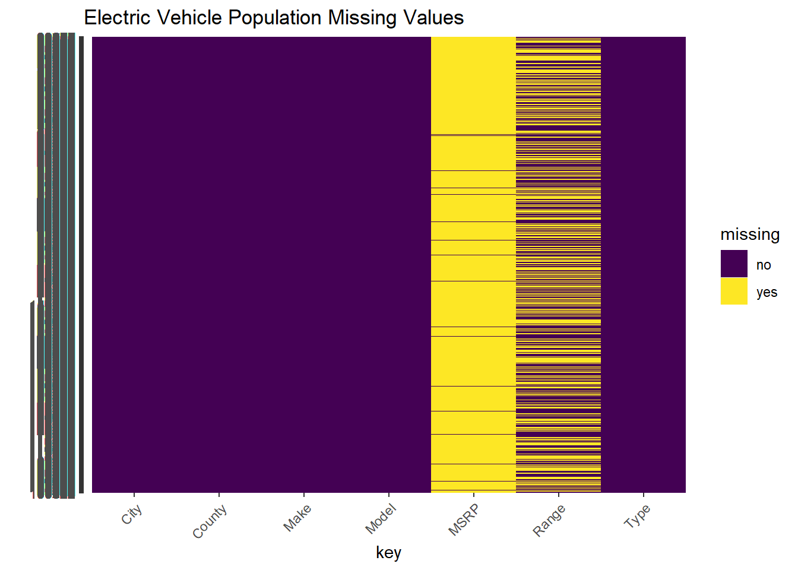
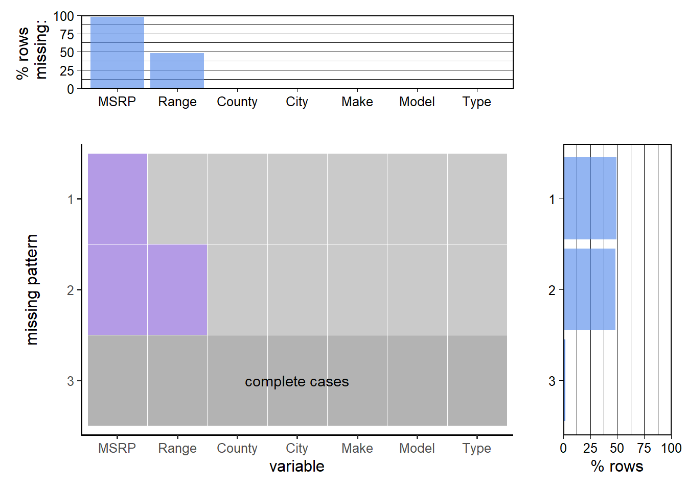

2 Data
2.1 Description
In this project, we will use two datasets about electric vehicles in Washington State. Both datasets are collected and maintained by Washington State Department of Licensing, and are published on Washington Open Data. The two datasets are created on April 16, 2019 and May 8, 2019 respectively and are updated monthly with the latest update on November 15th.
The first dataset Electric Vehicle Population Data contains information about current electric vehicle registrations in WA. It has 159,467 rows each representing a registered electric vehicle, and 17 columns including VIN (1-10), County, City, State, Postal Code, Model Year, Make, Model, Electric Vehicle Type, Clean Alternative Fuel Vehicle (CAFV) Eligibility, Electric Range, Base MSRP, Legislative District, DOL Vehicle ID, Vehicle Location, Electric Utility, and 2020 Census Tract. The dataset is clean except for some undocumented entries of Electric Range and Base MSRP represented as 0, which clearly doesn’t make sense. We will analyze this further in section 2.3.
The second dataset Electric Vehicle Population Size History contains monthly updated total count of Plug-In Hybrid Electric Vehicle, Battery Electric Vehicle, and Electric Vehicle Total in WA from January, 2017 to October, 2023. It has 82 rows and 4 columns. This dataset is ready-to-use as it has no issues.
Our data source allows us to download csv files which we will then upload to our github repository for further usage.
2.2 Research Plan
Trends in Electric Vehicle Adoption
- To identify the patterns of electric vehicle adoption over the years, we plan to plot a stacked bar chart based on the time series data within Electric Vehicle Population Size History dataset.
- The stacked bar chart would show the size of population owning PHEV, BEV, and their sum (EV) overtime.
Popular Electric Vehicle Models/Makes
- We choose to use the first dataset Electric Vehicle Population Data, which contains detailed information about each registered electric vehicle in WA.
- We are going to plot three pie charts to show the percentage of each make for PHEV, BEV, and EV. A cleveland dot plot is also suitable for displaying the ranking of different makes.
- We would then draw a faceted bar chart for the count of all makes at county level.
- After that, we would generate a list of interested makes. Therefore, we are able to take a closer look at customer’s preference by ploting a cleveland dot plot of models for subset of makes.
Distribution of Electric Range
- We would also address this question using Electric Vehicle Population Data.
- We intend to create a boxplot for electric range for all EVs.
- A faceted boxplot for different EV type (PHEV & BEV) is also necessary to explore the difference.
Price Analysis
- Similarly, we would use Electric Vehicle Population Datato investigate this question.
- We prepare to draw a boxplot and/or a ridgeline plot for MSRP of EV, as well as a faceted plot for PHEV and BEV.
- Moreover, we hope to graph a scatterplot of MSRP vs. electric range, separated by EV type.
2.3 Missing value analysis
There’s no missing value in Electric Vehicle Population Size History dataset, as we can tell from the graph.


As for Electric Vehicle Population Data dataset, it might appear at first that missing values only exist in columns that we’re not interested in. However, we notice entries with value of “0” for Base MSRP and Electric Range, which clearly does NOT make sense and thus should be treated as missing values. From the graph we can tell that other variables of interest have no missing values. Almost all values of Base MSRP are missing and about a half of Electric Range values are missing, with a extremly low percentage of rows not missing values from any columns. We also notice that for some specific model, we have instances for which Base MSRP is missing and instances for which Base MSRP is not missing, similar with Electric Range. We will address this issue when preprocessing the data, by filling known missing values using non-missing instances and filling unknown missing values with data provided by official websites of vehicle brands.